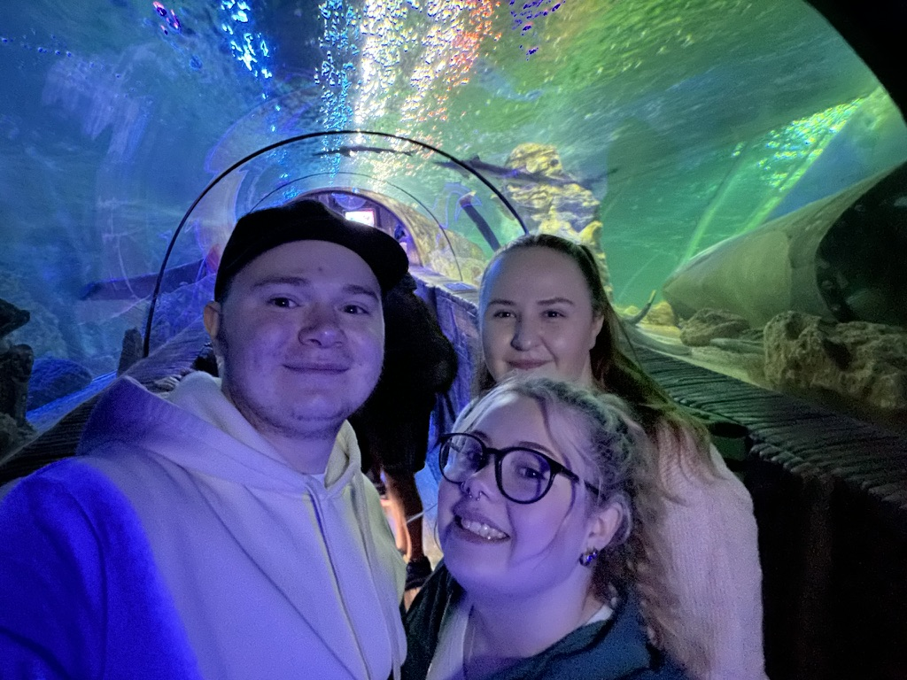
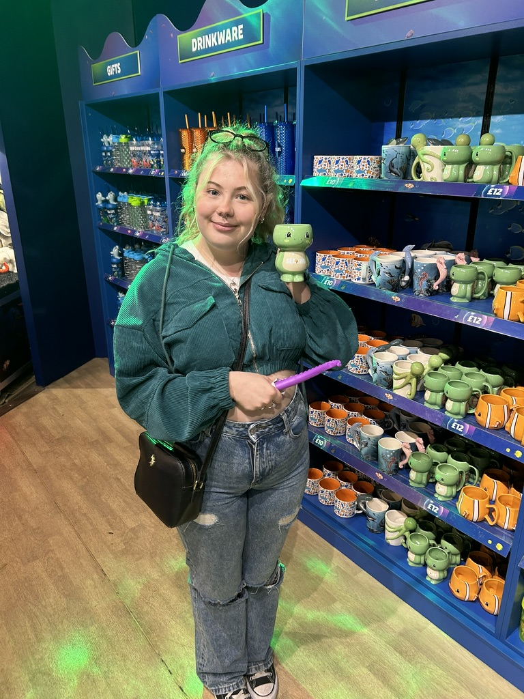
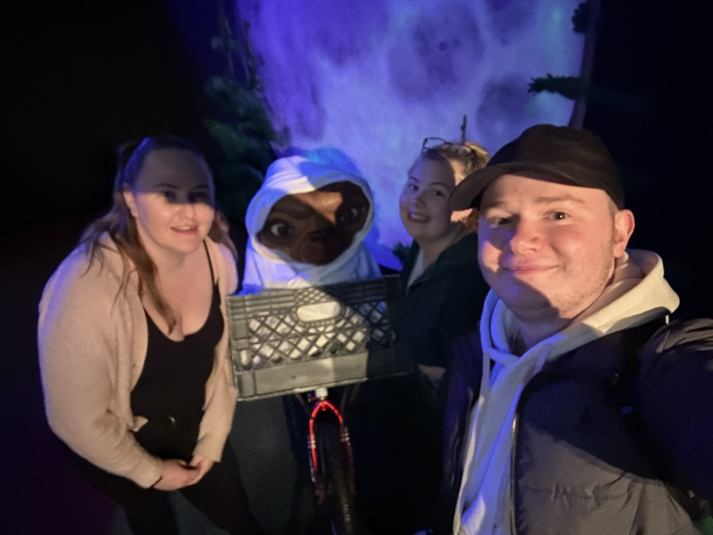
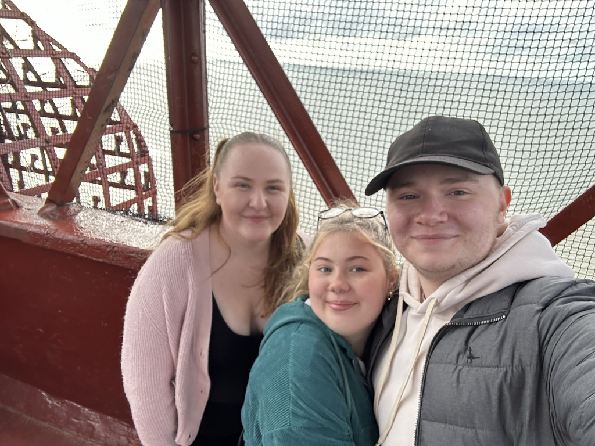

Welcome to the adventures using our Merlin passes. Today we decided to make a day of it and Me, Jake and Emily headed up to Blackpool. It was my first time going so excitement was in the air.
The drive was 2 hours and 30 minutes which was a steady relaxing ride till we saw a dead badger and it is safe to say I'm still not over it. We made good time getting there with no pee breaks but we all suffered for that when we arrived. Jake drove us and parked up in a Dore-approved car park which was a short walk from Blackpool front. With crossed legs, we found the nearest McDonald's to relieve our bladders before we walked down the front.
The first stop of the day was a trip to Sealife, we took a 45-minute walk around the aquarium to see many animals including sharks, jellyfish, turtles, and many more. It was smaller than anticipated however it was still amazing to walk around and get a photo in the glass tunnel. The gift shop was the final stop in Sealife where I was in teddy heaven. I finally settled on a turtle teddy called Tyrone and a purple tentacle pen which wiggled. After our walkthrough Sealife we had some time to kill before our next pass reservation so Jake took me and Emily for a walk around Coral Island, it was safe to say I will not be going back there anytime soon, the number of people was too much to get a good look around the place so we shortly left the place and took a slow walk to our next destination.
 We decided to take someone (Emily) who had a phobia of mannequins to Madam Tussauds. However, it was fully voluntary before you think me and Jake were bad friends and it wasn't the first time she's done it surprisingly. Emily tried her best to make it around the place without standing too close to the mannequins, while Me and Jake geeked out over the Doctor Who section which featured Jodie and Bill along with the Tardis and The Weeping Angles. We had a walk the the Aussie jungle with Ant and Dec and took a trip through the stars with Brian Cox. Next up was a walk through the Rovers pub, a short walk through the Marvel Universe to see the likes of Groot and Thor, and we ended with a visit to the Royals and Boris Johnson in 10 Downing Street.
After Madam Tussauds, we had a look around a few shops on Blackpool front where Jake bought some amazing baked goods from a very cute bakery shop. We all started to get hungry so we made our way to have some food in a Wetherspoons which was a quick turnaround when we saw how busy it was, we then tried are look in a cafe within the Tower to be beaten down again. So we decided to take a little walk and found Burger King in the Hounds Hills shopping center. After we ate we had a look around some shops, Jake ended up spontaneously buying me a charm from Pandora, we also made some purchases at a toy shop where we bought are Blackpool rubber duck Crystal, and I bought a toy tractor to soothe my inner-child.
The last stop of the day was a trip up the Blackpool tower to conclude the day, after an immersive 3D animation show that got me wetter than I thought we took a short lift ride up the tower. We were left to walk around on the first floor and then we led ourselves up three more flights of stairs to the highest point we could get to, which for people who are scared a height is not recommended. A few photos later we headed down the stairs back into their lift and safely back to flat ground, and then we decided it was home time.
The drive back was peaceful, with No badgers in sight on the way back, but tea was a looming thing a decision needed to be made with places such as Tops and Cosmo making the list as options and even a tea visit to N&P's who was "selfishly on holiday"- Jake. We finally decided on a Chinese takeaway to end the day.
Thank you for reading!